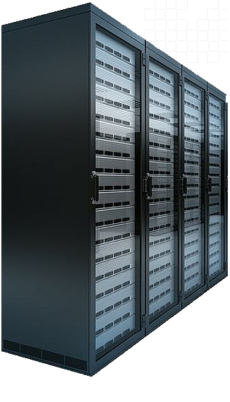

Comprétences dans plusieurs domaines clés
En voici quelques exemples
|  |

DatacenterConception, déploiement et administration d’infrastructures physiques et virtuelles reposant sur la virtualisation et l’hyperconvergence Mise en œuvre de solutions assurant la performance, la disponibilité et la continuité des services dans les environnements datacenter. TECHNOLOGIESVirtualisation, Hyperconvergence, Stockage partagé, Live Migration, haute disponibilité, Monitoring, Backup & Replication, Redondance réseau, Load Balancing. |
CybersécuritéDéploiement et administration de solutions de cybersécurité pour protéger les systèmes, les applications et les données critiques. Mise en place de politiques de sécurité garantissant la confidentialité, l’intégrité et la résilience des infrastructures. TECHNOLOGIESPare-feux NG, VPN SSL/IPSec, WAF, Antivirus & EDR, Protection e-mail, Contrôle d’accès, Chiffrement, Journalisation, Notifications. |
|

RéseauxConception, configuration et supervision d’infrastructures réseau performantes, segmentées et redondantes. Assurer la connectivité, la fiabilité et la sécurité des communications au sein de l’entreprise. TECHNOLOGIESRoutage & Commutation, Segmentation réseau (VLAN), Réseaux virtuels (GENEVE), Load Balancing, QoS, Monitoring réseau. |
|
CollaborationDéploiement et administration de services collaboratifs hébergés localement. Mise en œuvre de solutions assurant la disponibilité, la sécurité et la productivité des utilisateurs au sein de l’entreprise. TECHNOLOGIESOpen source ou proprietaire , Portail d'entreprise, Serveurs de fichiers, Serveurs d’impression. |